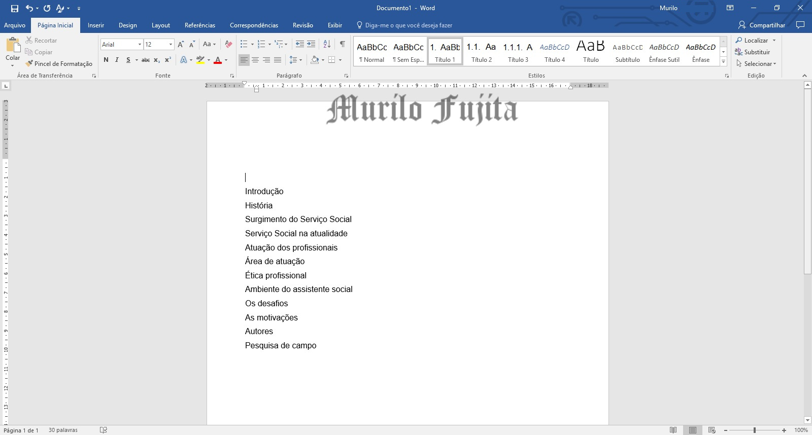
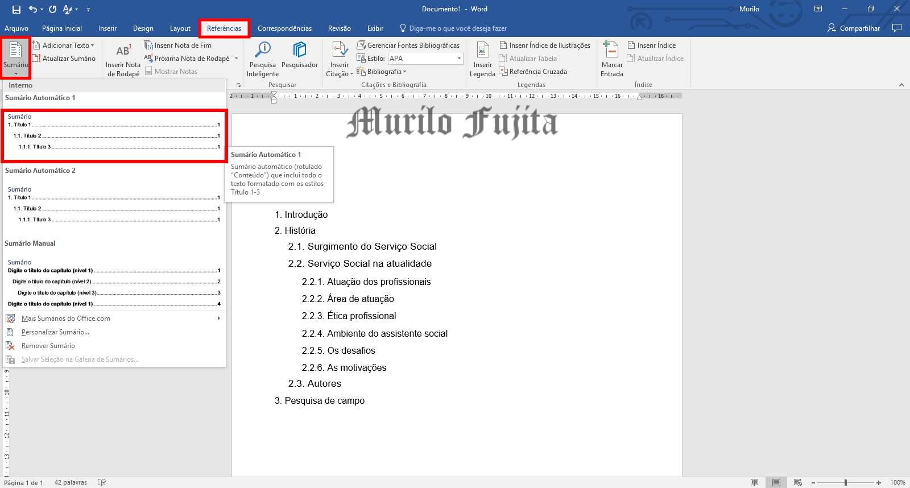
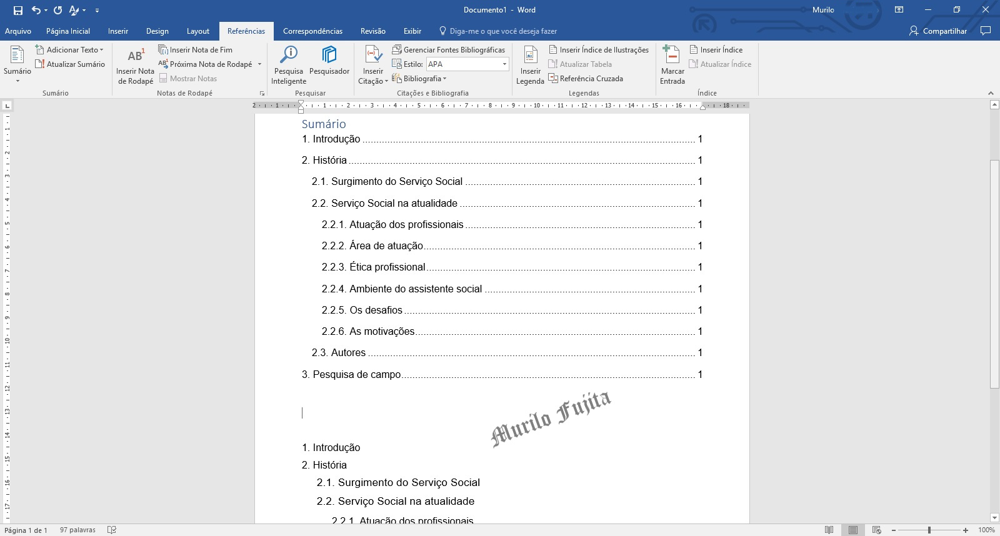
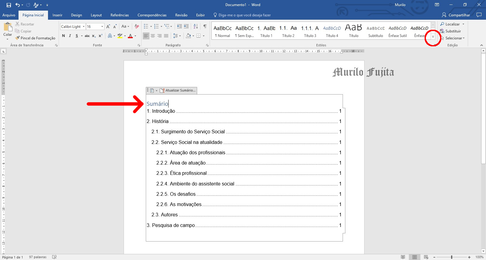
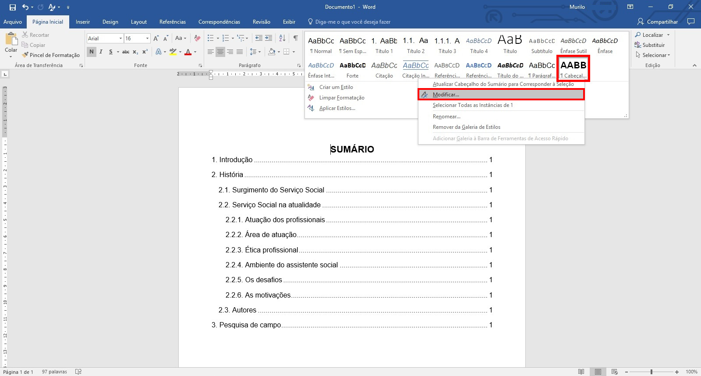
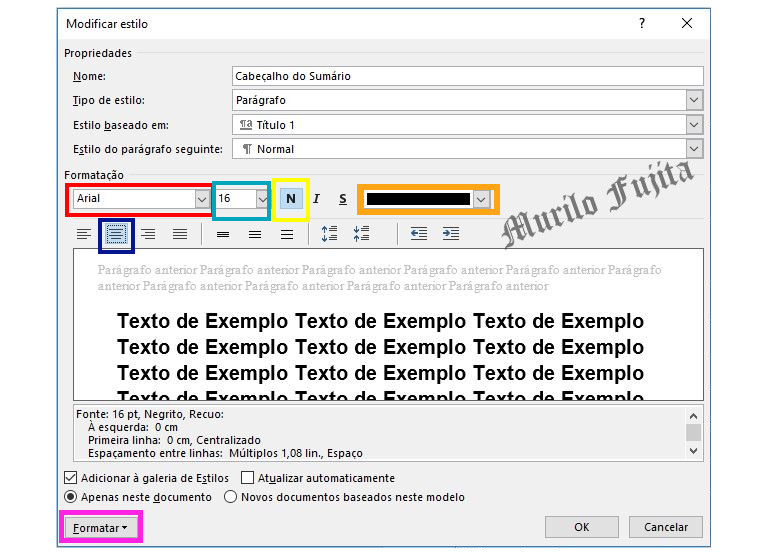
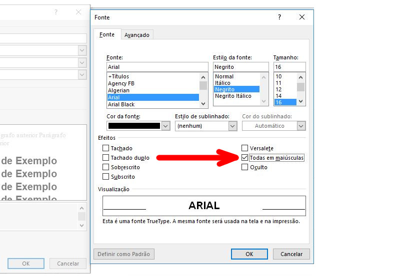
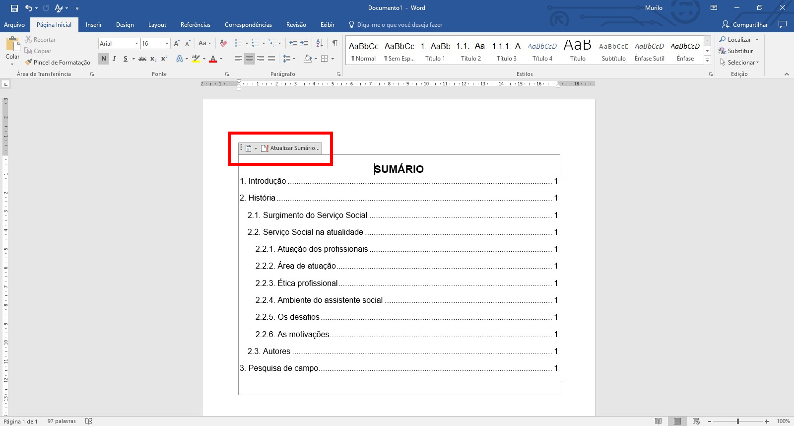
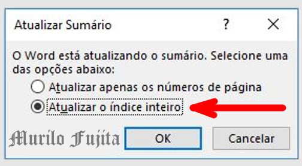
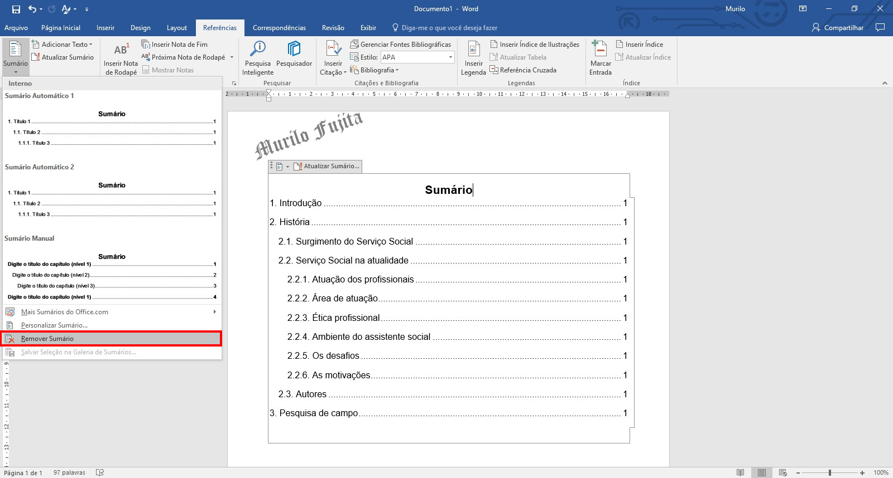

O resultado é visto na figura 2.
Não prossiga enquanto não terminar de aplicar todos os estilos.

As instruções a seguir orientam como criar um sumário automaticamente.
Como exemplo, considere os textos que são usados como títulos e subtítulos.
Aplique o estilo para cada texto como é mostrado na figura 1.
O resultado é visto na figura 2.
Não prossiga enquanto não terminar de aplicar todos os estilos.
Meu superior ↝ Referências.
Clique em Sumário.
Escolha Sumário Automático 1.
Veja figura 3.
O resultado é mostrado na Figura 4.
A norma acadêmica exige a palavra “Sumário” deve ser centralizada e com a mesma fonte utilizada nas seções primárias, ou seja, CAIXA ALTA E NEGRITO.
A seta aponta que o recurso automático do Microsoft Word não obedece a exigência.
Clique na seta da galeria de estilos para exibir outros estilos para que seja modificado o estilo do cabeçalho do sumário.
Veja Figura 5.
Clique com o botão direito em Cabeçalho do Sumário.
Clique em Modificar.
Veja a figura 6.
Para adequar às exigências, modifique:
O retângulo vermelho altera a fonte.
O retângulo verde altera o tamanho da fonte.
O retângulo amarelo habilita o negrito.
O retângulo laranja altera a cor da fonte.
O retângulo azul centraliza o texto.
Clique no botão destacado pelo retângulo rósea.
Veja a Figura 7.
Habilite a caixa alta clicando em Todas em maiúsculas.
Veja Figura 8.
O resultado é visto na Figura 9 com o Sumário centralizado e em CAIXA ALTA.
Sempre que fizer uma modificação (retirar ou adicionar conteúdos) os títulos serão reposicionados.
Clique em "Atualizar Sumário..." com o botão esquerdo como mostra a Figura 9.
Se for escolhido a 1ª opção, "Atualizar apenas os números da página", somente os números das páginas são modificados e os títulos permanecerão.
Já a 2ª opção, "Atualizar o índice inteiro", todas as modificações serão atualizadas.
Portanto, prefira a 2ª opção.
Veja a Figura 10.
Por fim, não é recomendado, mas caso queira retirar o sumário, siga os passos:
Menu superior → Referênias.
Clique em Sumário.
Clique em Remover sumário.
Veja Figura 11.
